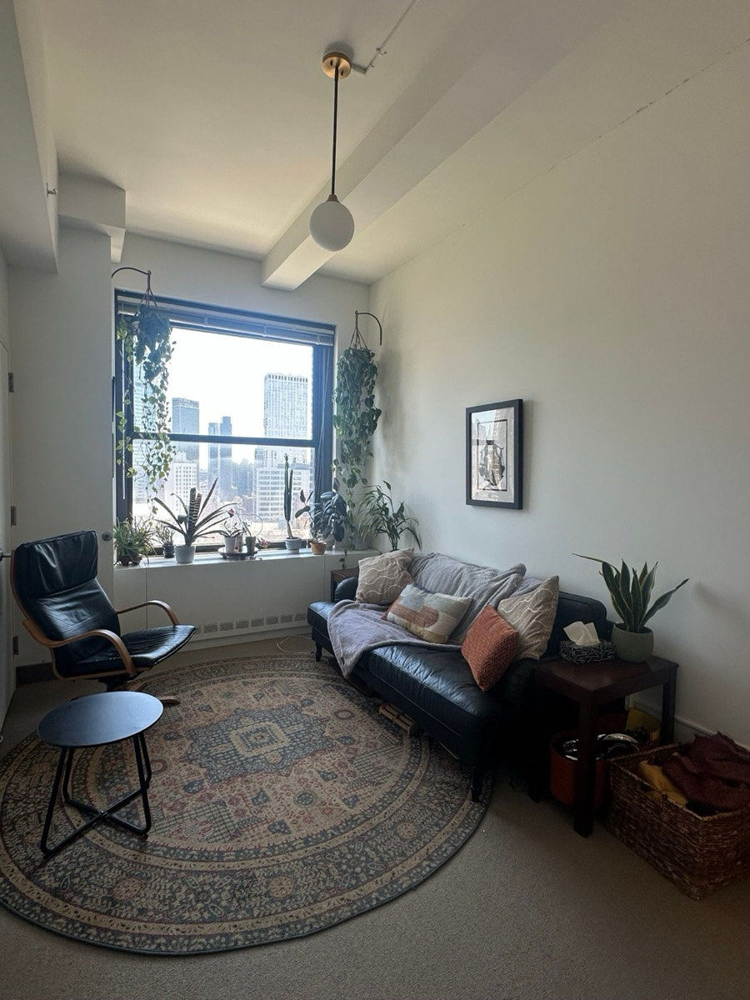

Individual and couples therapy in Brooklyn Heights and online
You've always been the one adapting. Here, you don't have to be.
Psychodynamic meets Somatic Experiential work for adults living with burnout, depression, anxiety, and trauma. I work closely with neurodivergent adults, adults who aren't sure of their neurotype, and immigrants and children of immigrants. In person in Brooklyn Heights, or online across New York and New Jersey. Trilingual in English, 普通话, and Fuzhounese.
Who I work with
Neurodivergent adults
Adults who identify as neurodivergent, anyone who isn't sure of their neurotype, and their partners.
Immigrants & children of immigrants
Adults building a life between two cultures, or working through family-of-origin patterns, cultural and intergenerational expectations, and what got passed down without words.
I also work with adults living with burnout, depression, anxiety, and trauma.
Neurodivergent adults
Many neurodivergent adults learn early to observe and imitate the social world around them, a process often called masking. This adaptation can make a person appear capable while costing a great deal of energy, and it can leave them with less access to their own needs and feelings. In my work, I pay attention to how these adaptations formed, what they have protected, and what they have cost. I also work with adults who aren't sure of their neurotype. You don't need a diagnosis or a label to begin.
Immigrants and children of immigrants
Migration does not end with arrival. Families can carry loss, sacrifice, and ways of surviving across generations, often without speaking of them. Children of immigrants may take on adult roles early, such as translating for their parents or protecting them from further stress. In adult life, this can show up as guilt around boundaries, not feeling fully at home in either culture, or old family patterns returning at times of change. I work with these experiences in their cultural context. I'm an immigrant myself, and I work in English, 普通话, and Fuzhounese.
The approach
Where psychodynamic work meets the body
My work is rooted in psychodynamic Gestalt therapy. Psychodynamic work helps us understand the patterns that shaped you and how they show up in your life now. Experiential somatic work brings that understanding into the room, through what you notice in your body and what happens between us. Insight alone doesn't always change how something feels. Depending on what you need, I bring in EMDR and Parts Work, especially when putting feelings into words is hard.
The foundation
Psychodynamic Gestalt
- What it is
- Exploring the patterns that shape how you relate, in the present moment, here in the room.
- Why it fits
- Whether you're neurodivergent, still wondering, or grew up between cultures, it helps you reread your history, and separate who you are from who you had to be.
- In session
- Paying attention to what's happening right now, including between us, with curiosity rather than judgment.
Tools I bring in, depending on what you need
Somatic therapy
- What it is
- Building awareness of signals inside the body (interoception): heart rate, tension, breath.
- Why it fits
- Research links difficulty naming emotions to interoception. Body awareness gives another way in.
- In session
- Noticing, grounding, and regulating your nervous system before and after hard topics.
- Interoception Lab
- A structured 12-week program drawn from Somatic Experiencing and Sensorimotor Psychotherapy, to help you build a connection with your subtle body cues.
EMDR
- What it is
- A structured trauma therapy using bilateral stimulation (eye movements or tapping).
- Why it fits
- It doesn't require retelling events in detail. Useful for bullying, rejection, and years of being misunderstood.
- In session
- A clear protocol with defined phases. Preparation comes first; processing starts only when you're ready.
Internal Family Systems (IFS)
- What it is
- A model of the mind as made of "parts": the masker, the critic, the one who just wants to shut the door.
- Why it fits
- It explains masking without blame: a part learned to protect you. We work with it, not against it.
- In session
- Getting to know these parts, often by noticing where they show up in the body.
Conjunctive services
If you already have a therapist, you can keep them. Conjunctive sessions add one focused piece of work to the care you already have. With your permission, I can coordinate with your therapist or prescriber.
About
I am a trilingual psychotherapist licensed in New York and New Jersey, working in American English, Mandarin, and Fuzhounese. I have personally experienced and worked with issues related to acculturation, immigration, and identity, and I specialize in working with people from diverse backgrounds.
Before becoming a therapist, I had a career in tech consulting. I have integrated that background with my psychology training to create an analytical, yet compassionate space for my clients.
Many people come to therapy wanting to solve a problem. We can start there. We can work on what is practical and pressing, and also look at what keeps the problem coming back. Long-held patterns once made perfect sense: they protected you and helped you survive and adapt. Over time, they can become inflexible.
Therapy can help you become a more expansive version of yourself, with more room for your feelings, your needs, and who you are. I am an active presence in our work, and I pay attention to what happens between us. We change by becoming more solidly rooted in who we are.
- Licensed Clinical Social Worker (LCSW) New York & New Jersey
- EMDR Training The Institute for Creative Mindfulness
- Somatic Embodiment & Regulation (SER) Certificate
- Psychodynamic Gestalt Training Gestalt Associates for Psychotherapy (GAP)

The room
This is where we meet: a quiet room on a high floor at 26 Court Street, with natural light, plants, and a few places to sit. Choose the sofa, the chair, or a floor cushion, whatever is comfortable. There's also a weighted blanket, if you'd like one.
If you'd rather start online, that works too, and you can visit later.
Insurance & payment
| Consultation | Free · 20 minutes · virtual |
|---|---|
| Sessions | Individual · 50 minutes Couples · 60 minutes |
| Insurance | I work with most commercial insurance plans as an out-of-network provider. |
| Reimbursement | You get a monthly superbill to submit to your plan. Many PPO plans reimburse 50–80% after your deductible. |
| Pay only your share | New clients can use Thrizer, which fronts your insurance reimbursement on eligible plans. You pay only your expected share at each session, not the full fee. |
| Check your benefits | Through Thrizer, in about a minute, with no commitment. |
Book
Start with a free 20-minute consultation
Pick any open time. The consultation is a virtual meeting, and you'll get a confirmation email with the link. If you'd rather not call, email works just as well.
- Email: lin@startwithaninhale.com
- Call or text: (347) 735-8420
- Office: 26 Court Street, Brooklyn Heights, NY